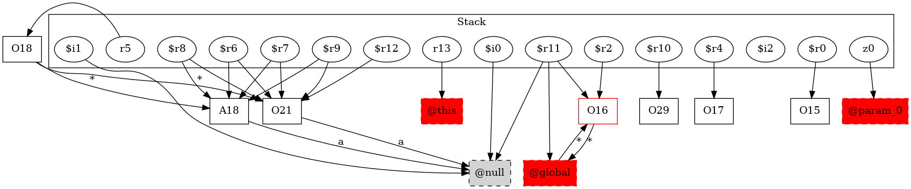

-1 : r13 := @this: Test6
-1 : z0 := @parameter0: boolean
15 : $r0 = new testcase.Test6
15 : specialinvoke $r0.|testcase.Test6: void |init|()|()
16 : $r2 = new testcase.Test6
16 : specialinvoke $r2.|testcase.Test6: void |init|()|()
17 : $r4 = new testcase.Test6
17 : specialinvoke $r4.|testcase.Test6: void |init|()|()
18 : r5 = newarray (testcase.Test6)[10]
20 : if z0 != 0 goto $r6 = r5[1]
21 : $r12 = new testcase.Test6
21 : specialinvoke $r12.|testcase.Test6: void |init|()|()
21 : r5[4] = $r12
24 : $r6 = r5[1]
24 : $r6.|testcase.Test6: int a| = 6
25 : $r9 = r5[1]
25 : $r7 = r5[1]
25 : $i1 = $r7.|testcase.Test6: int a|
25 : $r8 = r5[5]
25 : $i0 = $r8.|testcase.Test6: int a|
25 : $i2 = $i1 + $i0
25 : $r9.|testcase.Test6: int a| = $i2
27 : if z0 == 0 goto r17 = r5[5]
29 : $r10 = new java.lang.Exception
29 : $r11 = virtualinvoke $r2.|java.lang.Object: java.lang.String toString()|()
29 : specialinvoke $r10.|java.lang.Exception: void |init|(java.lang.String)|($r11) -> class soot.jimple.internal.JInvokeStmt
29 : throw $r10
32 : r17 = r5[5]
34 : return r17
